Tartalom
A céltalan gamer két barátjával együtt egy alternatív Tokióban találja magát, ahol az életben maradásért kénytelenek egy sor szadista játékban részt venni.
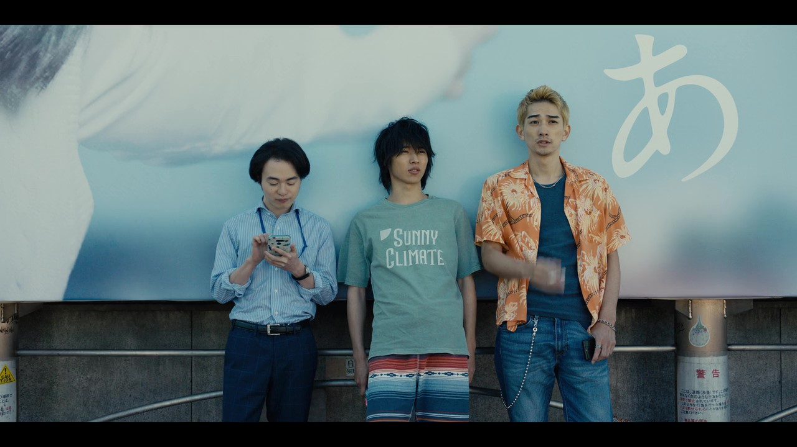
1.évad 1.részt
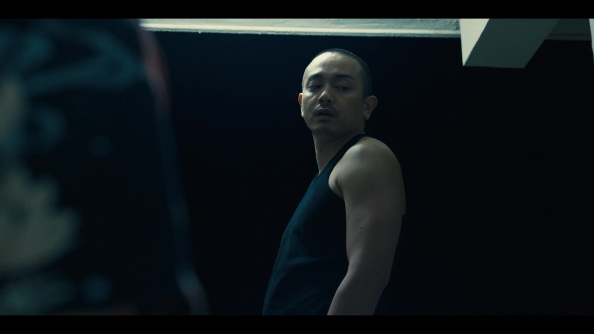
1.évad 2.részt
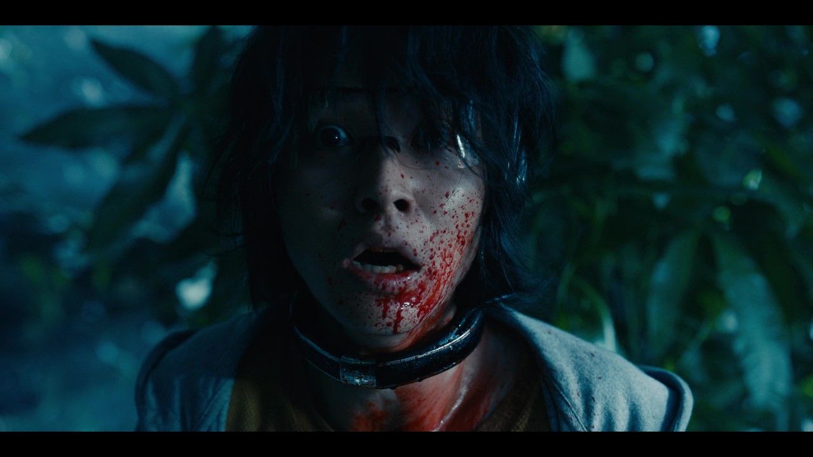
1.évad 3.rész
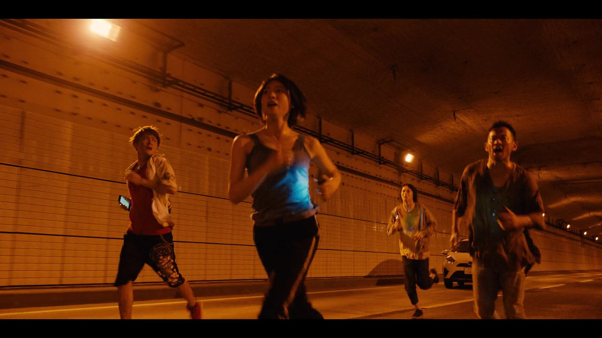
1.évad 4.rész
 1.évad 5.rész
1.évad 5.rész
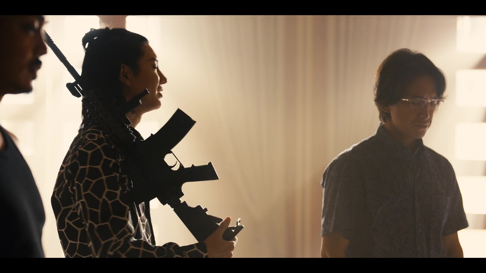
1.évad 6.rész
1.évad 7.rész
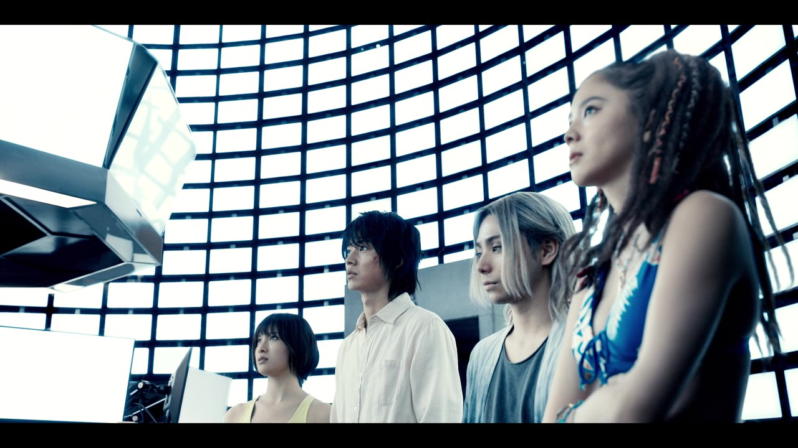
1.évad 8.rész
2.évad
Tartalom
Az új évad egy növényekkel borított, lepusztult Shibuyában játszódik. Arisunak és Usaginak meg kell fejtenie a Határvidék rejtélyeit, hogy visszatérhessenek a világukba.
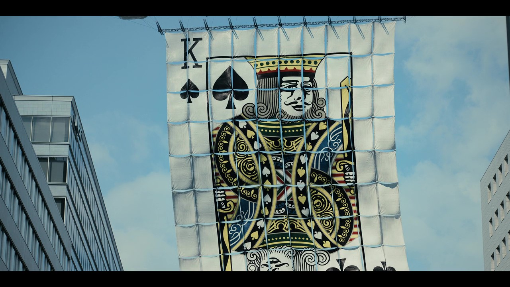
2.évad 1.rész
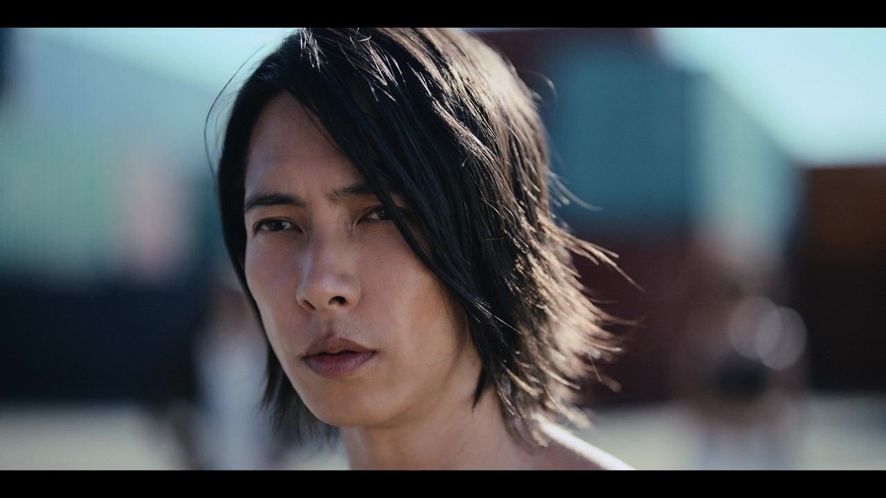
2.évad 2.rész
2.évad 3.rész
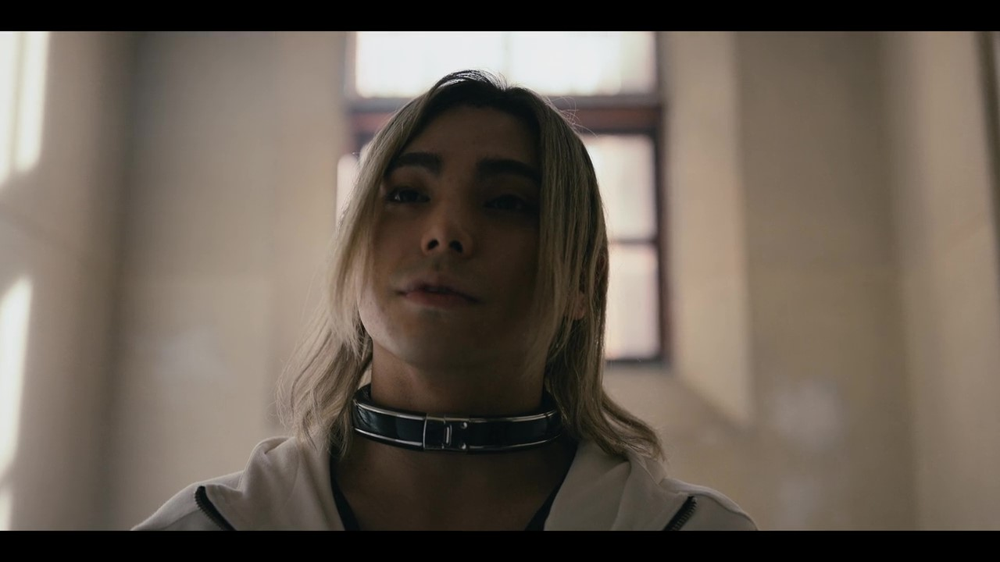
2.évad 4.rész
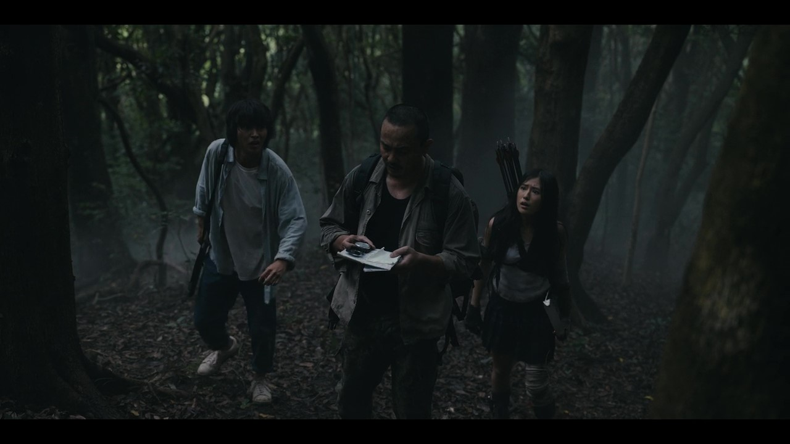
2.évad 5.rész
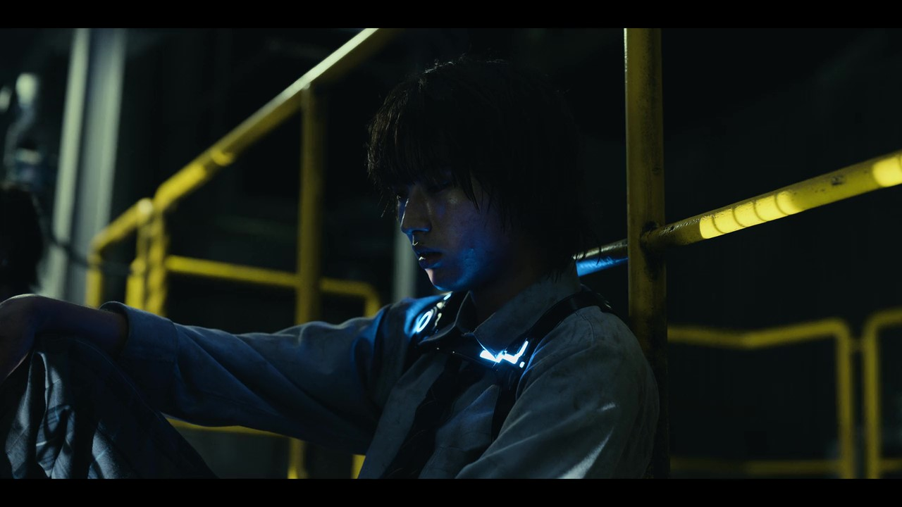
2.évad 6.rész
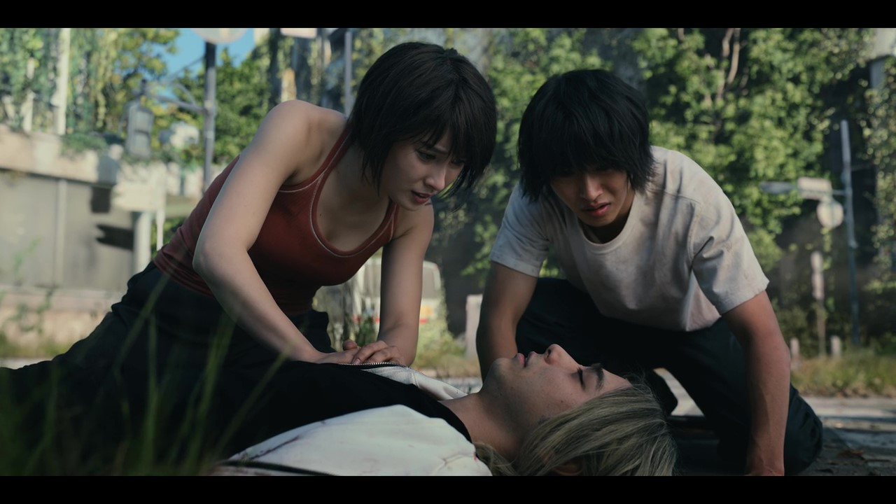
2.évad 7.rész
2.évad 8.rész
A harmadik évad hamarosan érkezik...